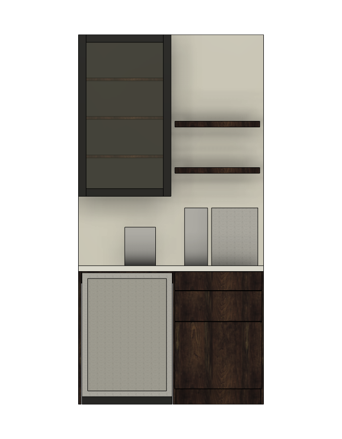
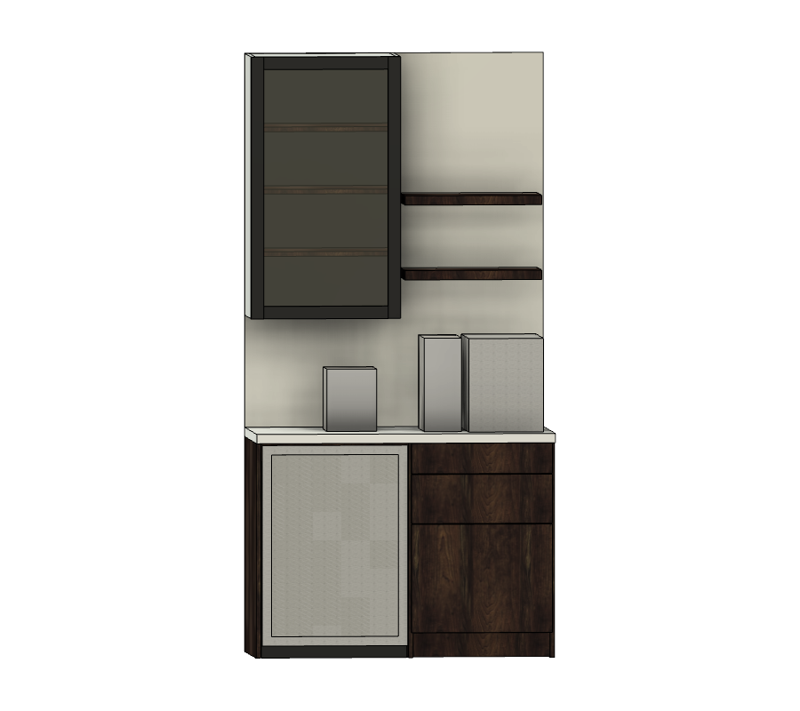

Overview layout left to right, from the room
A 48 in wide unit against a 96 in ceiling. Left side panel, cooler bay, partition, drawer stack, right side panel. The cooler door face sits flush with the drawer fronts at 24.75 in from the wall, and the counter overhangs them by 0.75 in.
| Element | Width in | Depth in | Height in | Location |
|---|---|---|---|---|
| Base cabinet carcass | 48 | 24 | 34.5 | Floor, against wall |
| Cooler bay (left) | 23.75 opening | 24 | 34.5 | x 0.75 to 24.5 |
| Coffee drawer bay (right) | 22 opening | 24 | 30.5 above 4 in toe kick | x 25.25 to 47.25 |
| Countertop | 48 | 25.5 | 1.5 | Top at 36 |
| Upper glass cabinet | 24 | 13 | 42 | Over cooler, bottom at 54 |
| Floating shelves (2) | 22 | 10 | 1.5 | Over drawers, at 60 and 72 |
| Mirror backsplash | 48 | 0.25 | 60 | 36 to 96 |
Open items before you order
Drawings Fusion model, viewed from the room
Walnut is the base and shelves, black is the upper cabinet and cooler case, white stands in for the stone top. The three gray boxes on the counter are the espresso machine, grinder and kettle placeholders used for clearance checks.


Appliances and clearances
The cooler sets the cabinet height: it needs 34.17 in under the counter and a 34.5 in carcass gives it 0.33 in. That bay has no plywood sub-top, only 3 in front and rear stretchers, so the stone rests on the side panel, partition and stretchers. Ask the fabricator to confirm a 1.5 in slab spans the 23.75 in bay unsupported in the middle. Most quartz will.
| Appliance | W in | Depth in | H in | Clearance provided | Price |
|---|---|---|---|---|---|
| TCL B422D dual-zone wine and beverage cooler | 23.4 | 22.5 with doors, 24.4 with handles | 34.17 | 0.175 each side, 0.33 above, front vented so zero rear gap | $395.00 sale, was $799.00, ends Nov 18 2026. Lowe's, checked Nov 13 2026 |
| Espresso machine (placeholder) | 12 | 16 | 15 | 9 in to lower floating shelf | Owned |
| Grinder (placeholder) | 6 | 12 | 15 | 9 in to lower floating shelf | Owned |
| Electric kettle (placeholder) | 8 | 8 | 10 | 8 in to upper cabinet bottom | Owned |
| Pod machine (stored) | up to 16 | Roll-out tray bay is 16.25 in tall, 21 in wide, 22 in deep | Owned |
Cooler: 106 lb, French doors, 20 bottles or 78 cans, wine zone 40 to 66 F, beverage zone 38 to 66 F, toe grille vents forward. Rated built-in, so no side or rear ventilation gap is required. Stainless handles ship in the box.
Cut list 28 parts, finished inches
Length runs with the grain. Frameless construction, 3/4 in carcass with 1/4 in backs, full overlay fronts with 1/8 in reveals. Drawer boxes are sized for 21 in Blum Tandem undermount slides, box width = opening minus 5/8 in.
| Part | Qty | Length | Width | Thick | Material | Notes |
|---|---|---|---|---|---|---|
| Base left side | 1 | 34.5 | 24 | 0.75 | Walnut ply | Finished face out, edge band front |
| Base right side | 1 | 34.5 | 24 | 0.75 | Walnut ply | Finished face out, edge band front |
| Base partition | 1 | 34.5 | 24 | 0.75 | Walnut ply | Edge band front, cooler side finished |
| Right bay bottom | 1 | 24 | 22 | 0.75 | Walnut ply | Edge band front |
| Right bay sub-top | 1 | 24 | 22 | 0.75 | Walnut ply | Counter bears on this |
| Right bay back | 1 | 29.75 | 22 | 0.25 | Walnut ply | In 1/4 in dado or nailed on |
| Toe kick | 1 | 23.5 | 4 | 0.75 | Walnut ply | Set back 3 in, right bay only |
| Cooler bay front stretcher | 1 | 23.75 | 3 | 0.75 | Walnut ply | Flush with top, pocket screwed |
| Cooler bay rear stretcher | 1 | 23.75 | 3 | 0.75 | Walnut ply | Flush with top, also the wall anchor rail |
| Top drawer front | 1 | 22.625 | 4.875 | 0.75 | Walnut ply | Grain vertical, all four edges banded |
| Middle drawer front | 1 | 22.625 | 7.875 | 0.75 | Walnut ply | Grain matched to top front |
| Door front | 1 | 22.625 | 17.375 | 0.75 | Walnut ply | Grain matched, hinges left |
| Top drawer box sides | 2 | 21 | 3.5 | 0.5 | Baltic birch | 1/4 in groove for bottom |
| Top drawer box front and back | 2 | 20.375 | 3.5 | 0.5 | Baltic birch | |
| Middle drawer box sides | 2 | 21 | 6 | 0.5 | Baltic birch | |
| Middle drawer box front and back | 2 | 20.375 | 6 | 0.5 | Baltic birch | |
| Drawer bottoms | 2 | 20.875 | 20.5 | 0.25 | Baltic birch | |
| Roll-out tray sides | 2 | 22 | 3.5 | 0.5 | Baltic birch | For 22 in side-mount slides |
| Roll-out tray front and back | 2 | 20 | 3.5 | 0.5 | Baltic birch | Tray is 21 wide overall |
| Roll-out tray bottom | 1 | 21.5 | 20.5 | 0.25 | Baltic birch | |
| Upper sides | 2 | 42 | 13 | 0.75 | Birch ply, painted black | Edge band front |
| Upper top and bottom | 2 | 22.5 | 13 | 0.75 | Birch ply, painted black | |
| Upper back | 1 | 40.5 | 22.5 | 0.25 | Birch ply, painted black | |
| Upper shelves | 3 | 22.5 | 12.75 | 0.75 | Walnut ply | Adjustable on shelf pins |
| French cleat halves | 2 | 22.5 | 4 | 0.75 | Birch ply | 45 degree rip, one on wall, one on cabinet |
| Upper door stiles | 2 | 42 | 2 | 0.75 | Poplar, painted black | 1/4 by 3/8 in rabbet for glass |
| Upper door rails | 2 | 20 | 2 | 0.75 | Poplar, painted black | Tenoned or pocket screwed to stiles |
| Floating shelves | 2 | 22 | 10 | 1.5 | Solid walnut | Glue up from 8/4, drill for rod brackets |
The three fronts come from one 22.625 by 30.5 in blank, cut in order top to bottom so the grain runs continuously down the stack.
Sheet goods and lumber prices read Nov 13 2026
Two sheets of walnut ply cover the base, fronts and upper shelves with room for grain matching. Everything painted black comes from one birch sheet. The 1/4 in sheet can be birch rather than walnut: the base back hides behind drawers and the upper back is painted.
| Material | Qty | Size | Used for | Unit | Line | Source | Notes |
|---|---|---|---|---|---|---|---|
| 3/4 in walnut plywood, G2S veneer core | 2 sheets | 4 × 8 ft | Base carcass, three fronts, upper shelves | $176.95 | $353.90 | Toledo Plywood | Regional yard, 93 in stock. A local hardwood dealer will be similar. Home Depot stocks only 2 × 8 ft walnut panels. |
| 3/4 in birch plywood, PureBond | 1 sheet | 4 × 8 ft | Upper cabinet carcass, French cleat | $75.73 | $75.73 | Home Depot 165921 | Lowe's shows this item by store only. |
| 1/4 in birch plywood | 1 sheet | 4 × 8 ft | Base back, upper back | $46.08 | $46.08 | Lowe's 796770 | Out of stock online on Nov 13. Check the store. |
| 1/2 in Baltic birch | 2 sheets | 30 × 30 in | Two drawer boxes, roll-out tray | $38.99 | $77.98 | Rockler | Pick 1/2 in on the page. |
| 1/4 in Baltic birch | 2 sheets | 30 × 30 in | Drawer and tray bottoms | $21.99 | $43.98 | Rockler | Pick 1/4 in on the page. |
| 8/4 walnut, FAS, rough | 8 bd ft | About 10 in wide | Two floating shelves | $16.00 /bf | $128.00 | Bell Forest Products | Under the 10 bf tier. Shipping extra. Finishes at about 1.75 in, plane to 1.5. |
| 1x3x8 poplar, S4S | 2 boards | 0.75 × 2.5 × 96 in | Upper glass door frame | $15.84 | $31.68 | Lowe's 5002010275 | Rip to 2 in. |
| Pre-glued walnut edge banding | 1 roll | 3/4 in × 50 ft | All exposed ply edges | $69.88 | $69.88 | Home Depot EDA0919 | 3/4 in wide, so apply carefully flush. 13/16 in gives more trim margin if you find it. |
| Sheet goods and lumber subtotal | $827.23 | Before tax and shipping | |||||
Hardware soft-close throughout
Soft-close undermount slides and concealed hinges keep the fronts clean. Brass bar pulls tie the walnut base to the black upper cabinet.
| Item | Qty | Spec | Where | Unit | Line | Link |
|---|---|---|---|---|---|---|
| Blum Tandem 563H undermount slides, soft close | 2 pairs | 21 in, 100 lb, part 563H5330B | Top and middle drawers | $21.99 /pair sale to Nov 21, regular $33.00 | $43.98 | CabinetParts |
| Blum front locking devices for Tandem | 2 pairs | T51.1700 left and right | Drawer boxes | about $5 /pair | allowance | Same vendor, under accessories |
| RELIABILT side-mount full-extension slides | 1 pair | 22 in, 100 lb, ball bearing | Roll-out tray | $19.98 | $19.98 | Lowe's 5329115 |
| Blum 71B3550 Clip top Blumotion hinges, 110 degree, full overlay | 6 | 35 mm cup, nickel | 3 on base door, 3 on upper door | $4.33 regular $6.19 | $25.98 | CabinetParts |
| Blum 0 mm frameless mounting plates | 6 | Part 173L6100 or 175H7100 | With the hinges | about $1.50 | allowance | Same page, under mounting plates |
| Sumner Street Vail bar pull, satin brass | 2 | 8 in center to center | Drawers, horizontal | $14.97 | $29.94 | Lowe's 1671524 |
| Sumner Street Vail bar pull, satin brass | 2 | 12 in center to center | Base door and upper door, vertical | $26.97 | $53.94 | Same page, choose 12 in |
| KIWDZFU hidden floating shelf brackets, stainless | 1 set of 4 | 0.47 × 6 in rods, 100 lb per pair | Two per shelf, lagged into studs | $85.98 | $85.98 | Lowe's 6350363 |
| Slagawa 24 V COB LED strip, tunable 2700 to 6500 K, dimmable | 1 kit | 16.4 ft, RF remote | Cut to 21 in under the upper and two 20 in runs under the shelves | $87.99 | $87.99 | Lowe's 105568079 |
| Aluminum LED channel with frosted diffuser | 3 | 24 in lengths | Over the LED runs | about $10 | allowance | Any 24 V channel kit |
| POWERTEC heavy-duty leveler legs | 1 pack of 4 | 600 lb, lock nuts, model 71136 | Under right bay | $16.50 | $16.50 | Home Depot |
| Shelf pins, 5 mm brass | 12 | Upper cabinet shelves | not priced | allowance | ||
| Pocket screws 1-1/4 in, cabinet screws #10 × 3 in, 18 ga brads, wood glue | 1 each | Carcass, wall anchoring, backs | about $40 total | allowance | ||
| Mirror mastic, J-channel, clear silicone | 1 each | Neutral cure | Backsplash, glass, counter seam | about $30 total | allowance | |
| Hardware subtotal, priced items | $364.29 | Checked Nov 13 2026 | ||||
Countertop, mirror and glass
Three items come from outside shops. The counter must be templated after the base is set and shimmed, not from these numbers alone.
| Item | Size in | Spec | Notes |
|---|---|---|---|
| Stone countertop | 48 × 25.5 × 1.5 (3 cm) | Quartz or marble, eased or small ogee edge on front and both ends, no stone backsplash | Finished ends on both sides unless a wall is tight to one end. Ask the fabricator to confirm the 23.75 in unsupported span over the cooler. |
| Antiqued mirror backsplash | 48 × 60 × 0.25 | Antiqued or smoked mirror, polished edges, safety backed | Cutouts for the counter receptacle and the LED switch. Template after the counter is in. |
| Door glass | 20.5 × 38.5 × 0.25 | Tempered clear, or light bronze tint to match the mirror | Sits in a 1/4 by 3/8 in rabbet behind a 20 by 38 in opening, held with silicone and retaining clips. |
Cost summary before tax and shipping
Sourced parts total $1,697.13. With the fabricator and electrical allowances the project lands between $3,700 and $4,800. The counter and mirror are the swing items, and together they cost more than the whole cabinet.
- Sourced parts
- $1,697every price read from its page
- Allowances
- $2,015 to $3,075estimates, not quotes
- Landed estimate
- $3,700 to $4,800before tax
By layer
By vendor
| Vendor | Items | Subtotal |
|---|---|---|
| Lowe's | Cooler, 1/4 in birch, poplar, side-mount slides, pulls, shelf brackets, LED kit, black enamel | $803.21 |
| Toledo Plywood or local hardwood yard | 2 sheets 3/4 in walnut plywood | $353.90 |
| Rockler | Baltic birch, Osmo | $179.95 |
| Home Depot | 3/4 in birch plywood, edge banding, levelers | $162.11 |
| Bell Forest Products | 8/4 walnut | $128.00 |
| CabinetParts | Blum slides and hinges | $69.96 |
| Sourced parts total | $1,697.13 | |
Allowances are estimates, not quotes. Every sourced price links to the page it was read from on Nov 13 2026. Re-check before ordering, since the cooler and Blum prices are time-limited sales.
Electrical
The espresso machine and kettle together exceed a 15 A circuit and nearly fill a 20 A one. Put the counter receptacle on a dedicated 20 A circuit and plug the cooler into the existing outlet. Check the breaker feeding that outlet before relying on it for anything but the cooler.
| Load | Typical watts | Amps at 120 V | Circuit |
|---|---|---|---|
| Espresso machine | 1,200 to 1,500 | 10 to 12.5 | Counter, 20 A dedicated |
| Electric kettle | 1,500 | 12.5 | Counter, 20 A dedicated |
| Grinder | 150 to 300 | 1.3 to 2.5 | Counter |
| TCL cooler | 100 to 150 running | 1.3 | Existing outlet |
| LED strips and driver | 30 | 0.3 | Existing outlet or counter |
Running the kettle while pulling a shot draws up to 25 A, which trips even a 20 A breaker. Accept that habit or split them onto two circuits.
Placement
Measured from the floor and from the left end of the unit.
| Device | Height in | From left in | Notes |
|---|---|---|---|
| Counter duplex receptacle, 20 A | 42 | 38 | Centered behind the espresso station, cutout in the mirror |
| Cooler receptacle | 6 | 12 | Inside the cooler bay on the wall, behind the cooler. Cord exits rear bottom. |
| LED driver | inside upper top | 12 | Plug-in driver on a switched or always-on receptacle. Fish low-voltage wire down to the floating shelves. |
| Dimmer or touch switch | 42 | 46 | Under the right end of the counter, or an in-line touch dimmer on the LED run |
Assembly sequence shop build
Build the base and upper as two boxes in the shop, fit the fronts, then take everything apart only as far as needed to carry it in.
Installation sequence on site
Electrical goes in first. The counter is templated on the set base, and the mirror goes up after the counter and before the upper cabinet.
Finishing
Walnut gets a clear hardwax oil. The upper cabinet and its door are sprayed or brushed satin black. Finish flat parts in the shop before assembly where possible. It is faster and gives a better surface than finishing a standing cabinet.
| Surface | Finish | Coats | Price | Notes |
|---|---|---|---|---|
| Walnut ply carcass, fronts, shelves | Osmo Polyx-Oil 3043 Clear Satin, 0.75 L | 2 | $57.99 | 258 sq ft per liter per coat, so one can covers both coats on about 95 sq ft. Buy two if you finish carcass interiors. |
| Solid walnut floating shelves | Same Osmo | 2 to 3 | included | Finish all six faces to limit cupping. |
| Upper cabinet and door frame | Evolution Paint Satin Bohld Black, 1 quart, over shellac-based primer | 1 primer, 2 top | $52.62 + primer, about $20 | Fill birch edge banding seams before priming. Satin matches the photo's soft black. |
| Drawer boxes and tray | Waterborne satin poly | 2 | about $25 | Inside and out, before mounting slides. |
| Poplar door rabbet | Painted with the frame | included | Glass goes in after full cure. | |
| Finishes subtotal, priced items | $110.61 | Checked Nov 13 2026 | ||